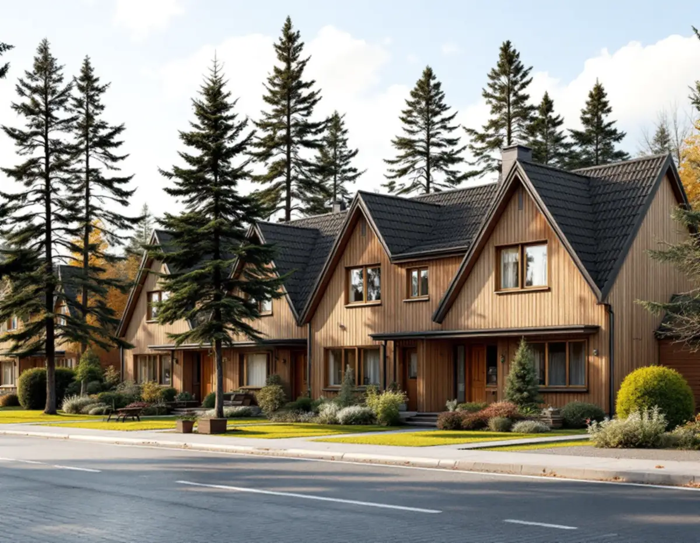
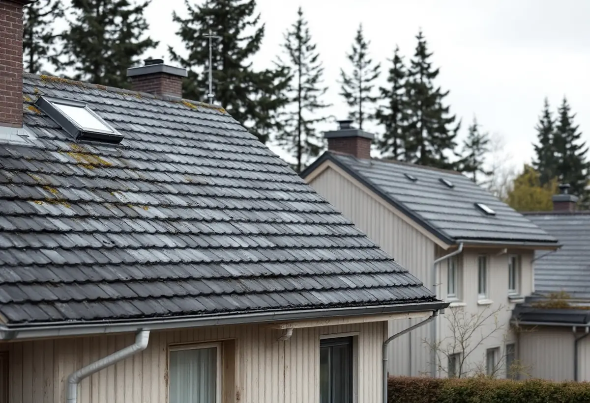

Platsbesök
Vi bedömer tak, underlag och vind och tar foton av huset från alla väderstreck.
Sollentuna kommun har en egen sida om att byta takmaterial, och hela kommunen ligger inom totalförsvarets riksintresseområde. Det gör det tydligt vad som gäller när taket ska bytas – och viktigt att planera eventuella solceller i tid. Geal Entreprenad AB byter tak i hela Sollentuna och lämnar ett skriftligt kostnadsförslag efter ett gratis platsbesök.

Sollentuna beskriver en fasadändring som att byggnaden byter kulör, fasadbeklädnad eller taktäckningsmaterial, eller att de yttre karaktärsdragen påverkas på annat sätt. På en- och tvåbostadshus krävs det oftast inte bygglov. Bor du i radhus, kedjehus eller ett annat sammanbyggt småhus beror möjligheterna på hur bebyggelsen är utformad, och kommunen ber dig då kontakta kontaktcenter för vägledning.
Bygglov behövs om fastigheten ligger inom ett kulturhistoriskt värdefullt område eller om byggnaden är kulturhistoriskt värdefull. Kommunen skriver att de bygglovsbefriade åtgärderna inte går att tillämpa i sådana områden, och att ett hus kan vara särskilt värdefullt även om det inte finns med i kulturmiljöplanen. Vissa detaljplaner reglerar dessutom hur tak- och fasadmaterial ska vara utförda.
För att få en bedömning kan du skicka in adress eller fastighetsbeteckning, foton på huset från samtliga väderstreck och en beskrivning av vad du vill göra, och kommunen återkopplar med en bedömning. Det är ett enkelt första steg innan pannor eller plåt beställs.

Kommunens checklista för bygglov vid byte av takmaterial anger att ansökan görs via e-tjänst och ska innehålla förslag till kontrollplan, situationsplan på en baskarta och fasadritning eller fotomontage. Handläggningstiden anges till ungefär två till fyra veckor.
Fasadritningen ska vara i skala 1:100 och visa både den befintliga fasaden, med fönster, dörrar och takkupor, och den nya fasaden, med en tydlig markering av var ändringen görs. Situationsplanen kan för enklare åtgärder ritas på en tomtkarta i skala 1:400, som går att skriva ut som pdf från kommunens webbplats.
Äldre ritningar på huset kan sökas fram kostnadsfritt i kommunens bygglovsarkiv. Kommunen erbjuder just nu ingen mall för kontrollplan och räknar med att kunna erbjuda den igen under hösten 2026, så till dess tas kontrollplanen fram på egen hand. Vi lämnar uppgifter om material, kulör och utförande som underlag till handlingarna.
Enligt kommunen omfattas hela Sollentuna av totalförsvarets riksintresseområde. Därför kräver solceller och solfångare på en byggnad inom detaljplanelagt område bygglov. Utanför detaljplan krävs lov om fastigheten ligger i ett kulturhistoriskt värdefullt område eller om byggnaden är kulturhistoriskt värdefull.
En ansökan om solceller kräver mer än ett materialbyte. Utöver kontrollplan, situationsplan och fasadritning i skala 1:100 vill kommunen ha tillverkarens specifikation av panelerna, i vissa fall en takplan och konstruktionsritningar om den bärande konstruktionen påverkas. Handläggningstiden anges till ungefär fyra till tio veckor.
Anmälan krävs om anläggningen väsentligt påverkar bärande konstruktion eller brandskydd, och kommunen påpekar att ett batterilager på mer än 20 kWh inne i byggnaden kan behöva bli en egen brandcell. Eftersom handläggningen tar längre tid än själva takbytet lönar det sig att söka i god tid, så att infästningarna kan förberedas medan taket ligger öppet. Läs mer under solceller på taket.
I ett sammanbyggt hus är taket en del av hela längan, och kommunen skriver att möjligheterna att göra en fasadändring utan lov beror på hur bebyggelsen är utformad. Byter flera grannar samtidigt blir pannor, kulör och plåtdetaljer desamma, och anslutningen mot grannens tak behöver bara göras en gång.
Kommunen påpekar också att tilläggsisolering kan räknas som en fasadändring, eftersom den kan ändra husets utseende. Isoleras taket från utsidan i samband med bytet kan takfot och vindskivor behöva ändras, så den frågan bör ställas till kommunen tillsammans med frågan om materialet. Mer om isolering finns under vindsisolering.
Även när inget lov krävs är du som byggherre ansvarig för att lagen följs, bland annat att ändringen anpassas till byggnadens och områdets karaktär och stämmer med detaljplanen. Vill du ha ett beslut kan du söka frivilligt bygglov. Hur vi arbetar i kommunen i övrigt beskrivs under takläggare i Sollentuna.
Vi bedömer tak, underlag och vind och tar foton av huset från alla väderstreck.
Vid behov skickas foton och beskrivning till kommunen för ett besked om kulturvärden.
Material och kulör bestäms, och vi lämnar uppgifter till en eventuell ansökan.
Rivning, underlag, ytskikt, plåt och ställning redovisas var för sig.
Gammalt tak rivs, nytt underlag och nytt tak läggs, och huset hålls tätt varje kväll.
Vi går igenom taket och detaljerna med dig och grannarna i längan.
För ett småhus räknar Skatteverket det som rotarbete att byta och reparera takpannor, plåttak och hängrännor, och även att montera och montera ner byggnadsställningar och byggstäda efter arbetet. Avdraget är 30 procent av arbetskostnaden, högst 50 000 kr per person och år och högst 75 000 kr tillsammans med rutavdrag. Material, resor och bortforsling ger inget avdrag.
Du behöver äga huset medan arbetet utförs och bo i det. Geal drar av ROT direkt på fakturan.
Takets yta och lutning, val av material och kulör, om flera hus i en länga byter samtidigt, mängden plåt kring kupor och skorstenar, om taket ska tilläggsisoleras och om infästningar för solceller ska förberedas. Läs mer i vad kostar ett takbyte. Efter platsbesöket får du ett skriftligt kostnadsförslag.
Byte av tegel-, betong- och plåttak.
Takbyte →Takbyte, takbesiktning och plåtarbeten.
Takläggare i Sollentuna →Norrviken, Tureberg och Edsberg.
Takrenovering i Sollentuna →Radhus, villa och en extra bostad.
Attefallshus i Sollentuna →Tillbyggnad, tomtdelning och lov.
Byggföretag i Sollentuna →Ny kulör och lov i villastaden.
Fasadmålning i Sollentuna →Buller, ljudglas och radhus i Sollentuna.
Fönsterbyte i Sollentuna →Täta gamla fönster med ventilationen i åtanke.
Fönsterrenovering i Sollentuna →Radhus i Sjöberg och villor nära stationerna.
Golvläggare i Sollentuna →Massivt trä eller lamell – vad går att slipa.
Golvslipning i Sollentuna →Villastad och radhuslängor.
Köksrenovering i Sollentuna →Radhusplåt, bleck och rännor i Sollentuna.
Plåtslagare i Sollentuna →Villastad, radhus och ventilationen.
Badrumsrenovering i Sollentuna →Villor och radhus i Sollentuna.
Fasadrenovering i Sollentuna →Villor och radhus i Sollentuna.
Målare i Sollentuna →Altaner, uterum och bryggor.
Snickare i Sollentuna →Ny tapet efter prov av väggen.
Tapetsering i Sollentuna →På höjden, nya byggregler och ritningar.
Tillbyggnad i Sollentuna →Radon med i planen för hela huset.
Totalrenovering i Sollentuna →